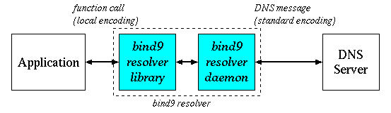
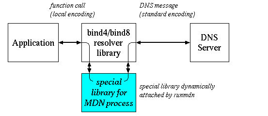
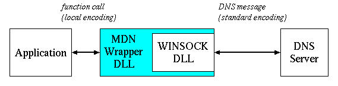
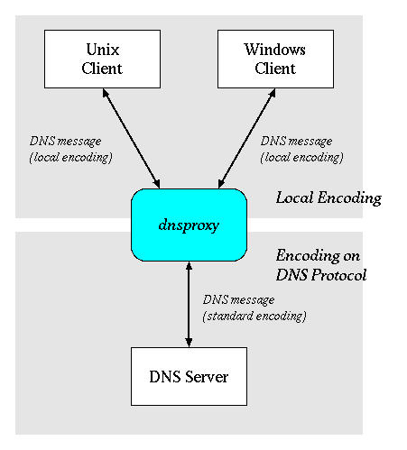
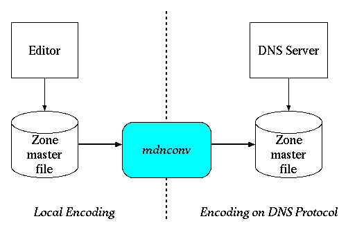

mDNkitのガイドは以下のドキュメントから構成されています。
一般ユーザの方はまずmDNkitの紹介をご覧ください。 そのあと、使用する多言語ドメイン処理方式 (あなたのシステムで 利用できる処理方式についてはシステム管理者にお尋ねください) に応じて bind9 パッチ、 runmdn、 mDN Wrapper、 dnsproxy のいずれかをご覧ください。
本キットをインストールするシステム管理者の方はすべてのガイドに 一通り目を通しておくことをお勧めします。
本キットはフリーソフトウェアです。本キットの使用、再配布等に関する 条件については LICENSE.txt を ご覧ください。
mDNkitは、既存のDNSサーバ(bind8/9)、既存のクライアントで、 多言語ドメイン名を使うために提案されている各種の方式を試験的に 評価してみることができるようにするための パッチ、ツール、ライブラリをまとめたものです。
従来、ドメイン名には、英字、数字(およびハイフン)しか使えませんでした。 多言語化されたドメイン名とは、ドメイン名としてこれらに加えて日本語など いろいろな言語の文字を使えるようにしたものです。 その実現方式として、現在インターネットドラフトでいくつかの 提案がなされています。(参考文献 参照)
DNS で多言語ドメイン名を使えるようにするには、まず DNS サーバ間で 多言語ドメイン名として使用する標準エンコーディング (コードセット) を 決める必要があります。 現在提案されている方式は、いずれもISO10646 をベースとした エンコーディングで、大きく次の2つに分けられます。
1. の方法は、エンコード結果が従来のドメイン名としても使える文字列になるので、 多言語ドメイン名を既存のDNSが受付けることができる文字列で 表現することができます。この場合、DNSサーバ自体は 既存のものがそのまま使えます。
2.の方法では、DNS サーバをそのエンコーディングに対応するように 改造する必要があります。
いずれの方式に関しても、DNS サーバの持つドメイン名のデータはあらかじめ そのエンコーディングで用意する必要があります。
一方、アプリケーションは一般的には SJIS 等のローカルエンコーディングを 使用するので、多言語ドメイン名を使えるようにするためにはどこかで エンコーディングの相互変換をする必要があります。
つまりアプリケーションは多言語ドメイン名をローカルエンコーディングで 扱い、DNS サーバは標準エンコーディングで扱うので、 クライアントと DNS サーバの間のどこかでアプリケーションの指定した ローカルエンコーディングのドメイン名を標準エンコーディングのドメイン名へ 変換し、 また DNS サーバからの応答に含まれる標準エンコーディングのドメイン名を クライアントで表示可能なローカルエンコーディングに戻さなければなりません。
このためには次の3種類の方法が考えられます。
ただし b. の方式は DNS サーバに不必要に複雑な機構を持ち込むこと、負 荷を高めることなどの問題があり好ましくないため、本キットでは a. と c. の2通りの方法を提供します。
mDNkitは、既存のDNSサーバ、クライアントを、最小限の改造で 複数の方式の多言語ドメイン名を 実際に試してみることができるようにするものです。
多言語ドメイン名を扱うためには、エンコーディング変換の他にも重要な 機能があります。それはドメイン名の正規化です。
すでに述べたように、DNS サーバ間で使用されるドメイン名のエンコーディング として提案されている方式はいずれも ISO10646 をベースとしていますが、 ISO10646 では見かけ上全く同一の文字を表す方法が複数ある場合があります。 このような文字に対してその表現方法を1つに統一しないと、ユーザが 正しい (と思える) ドメイン名を入力したにも関わらず、名前解決ができない という不都合が生じることになります。
また、従来の ASCII ドメイン名では、ドメイン名のマッチングの際に大文字と 小文字は同一視されていました。これをそのまま多言語ドメイン名にも適用する ことは、マッチングの処理効率などの点で問題があり、あらかじめすべて小文字 あるいは大文字に統一するのがより効率的だと考えられます。
このようにドメイン名をあらかじめ設定した基準にしたがって標準形に変換するのが 正規化です。基本的には正規化はエンコーディング変換と同時に行われるので、 エンコーディング変換と同じく
多言語ドメイン名を扱う方法のあるべき姿は、クライアント側の リゾルバライブラリなどにエンコーディングの変換や正規化の機能を 持たせることによって、DNS プロトコルにはローカルエンコーディングの データを一切載せないことだと考えられます。 この処理方法を実現するために mDNkit ではいくつかの方式を提供しています。



runmdn コマンドと mDN Wrapper は、既存のアプリケーションを変更せずに 多言語ドメイン名の機能を付加しようとするものですが、実際にはいくつかの 制限事項があり、どのようなアプリケーションにも適用できるものではありません。 詳しくはそれぞれの解説をご覧ください。
また bind9 パッチといえども、例えばアプリケーションが独自に ドメイン名の文字チェックを実行して英数字とハイフン以外の文字を含む ドメイン名をエラーにしていたりする場合には無力です。
すでに述べたように、エンコーディング変換や正規化は クライアント側で実行するのが理想的だと考えられますが、 実際問題としてソースが公開されていないためそのような改良のできない クライアントや、特殊なリゾルバを持っていて runmdn が適用できないクライアントが 存在します。
そこで mDNkit では、クライアントからローカルエンコードされた 多言語ドメイン名を含むDNS要求を受け取り、多言語化対応した DNS サーバが受付けられる標準エンコーディングのドメイン名に変換し、 また逆に DNS サーバからの応答の多言語ドメイン名を クライアント側で認識できる形式に戻す DNS proxy サーバを 用意しました。
dnsproxyを使うと、 クライアント側がドメイン名のチェックや変換を 行なっていなければ、クライアント側のローカルコードで記述された ドメイン名を、そのまま多言語ドメイン名として使うことができる ようになります。

DNS サーバ側のゾーンマスタファイルや named.conf ファイル上のドメイン名は、 あらかじめ、規定されたエンコーディングに変換されている必要があります (前述の理由により DNS サーバに変換機能を持たせる方法はここでは考えません)。
mDNkitでは、管理者はこれらのファイルをローカルエンコーディングで 作成して必要に応じて変換して使うものと想定し、 ローカルエンコーディングから 多言語ドメイン名で必要とするエンコーディングへの 変換ツールmdnconvを提供します。

| 注: | ローカルエンコーディングで記述されたゾーンマスタ ファイルを多言語エンコーディングへ変換することはできますが、 多言語エンコーディングによっては逆変換が できないことがあります。 これは、エンコーディングによってはそのエンコーディングで エンコードされた文字列と通常の ASCII 文字列が 区別できず、ファイルのどの部分を逆変換すべきか判定できない ものがあるためです。 しかし、DNSの管理のためには、 逆方向の変換も必要になると思いますので、一部のエンコーディングに 対しては逆変換をサポートしています。 |
DNS サーバの使用するエンコーディングによっては、 DNSサーバ自体がドメイン名を8ビット透過で扱うことを 要求するものもあります。 このようなエンコーディングへの対処のために mDNkitにはbind8を8ビット透過にするためのパッチが 含まれています。このパッチはbind8に含まれている nslookup、resolverについても8ビット透過にします。
bind9 の DNS サーバは本来8ビット透過になっていますが、 ドメイン名を内部形式からテキスト形式に変換する際、8ビット文字を `\DDD' という表現に変換してしまうので、これを抑制して UTF-8 文字は そのまま透過するようにする機能が bind9 パッチには含まれています。